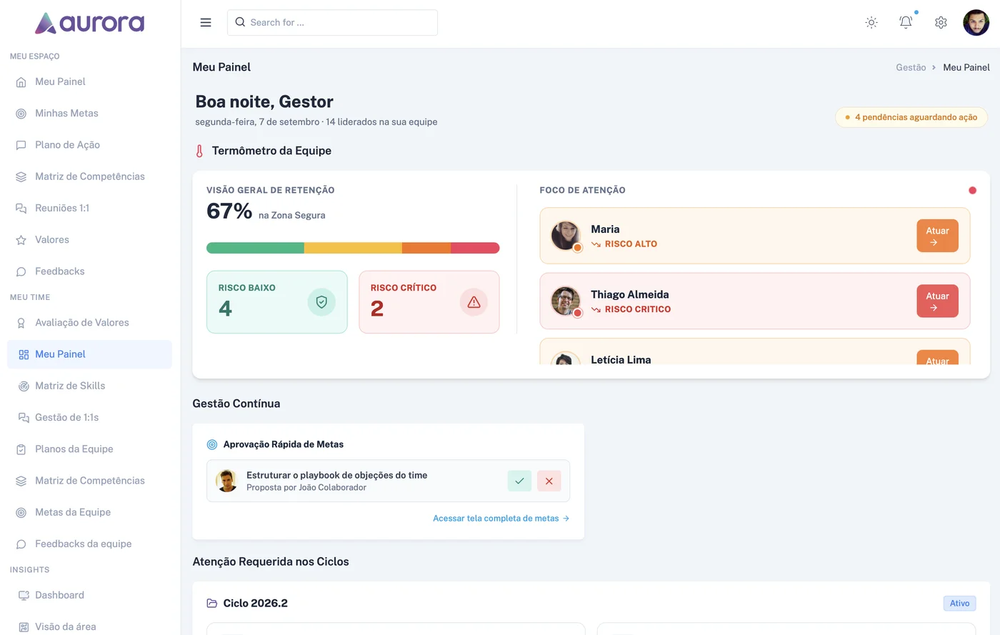

Performance & Metas
- Ciclo de Performance: acompanhe a evolução de cada colaborador ao longo de ciclos estruturados.
- Gestão de Metas: defina, acompanhe e avalie metas individuais e por área.
A Aurora une dados e consciência humana em cada decisão sobre pessoas, do dia a dia da gestão às escolhas mais difíceis, como um desligamento.

O problema
Contratar, promover, desligar. São decisões que definem o resultado da empresa e a vida de quem trabalha nela, e ainda assim, na maioria das operações, são tomadas com informação incompleta.
Dados de performance, cultura e engajamento espalhados entre planilhas e sistemas diferentes.
Decisões difíceis tomadas sob pressão de tempo e sem apoio de dados consolidados.
Pouca visibilidade sobre o impacto humano e financeiro de cada escolha até que seja tarde demais.
Diagnóstico rápido
3 perguntas rápidas, sem cadastro, para descobrir o quanto sua operação já decide com dados.
A solução
Acreditamos que o futuro do RH une o digital ao humano: decisões sobre pessoas tomadas a partir de dados e com consciência dos impactos gerados, colocando as pessoas como protagonistas. A Aurora é o RH as a Service que dá a líderes e times de RH uma visão consolidada, da gestão do dia a dia às decisões mais difíceis.
Performance, cultura e engajamento em um só lugar.
Dados a serviço das pessoas, não o contrário.
Insights acionáveis, não só relatórios.
O produto
Impacte o resultado da empresa aproveitando o maior potencial das pessoas, com lideranças decidindo a partir de uma visão consolidada de suas áreas e liderados.
Como funciona
Gestão em tempo real, com previsibilidade dos resultados.
Diagnóstico em tempo real de engajamento para garantir uma base sólida de produtividade.
Monitoramento constante do alinhamento comportamental e da aderência aos princípios da organização.
Gestão transparente de entregas, quantitativas e qualitativas.
Fluxo de comunicação sem interrupções, eliminando surpresas ao fim do ciclo e fundamentando decisões com base em dados.
Visão consolidada e contínua do colaborador. A IA processa highlights e lowlights para gerar planos de ação imediatos, com transparência e previsibilidade.
Prova social
Planos
Preço por colaborador, com faixas por porte de empresa nos planos Rosa e Violeta. Lançamento em breve.
Entrar na lista de esperaContato
Agende uma demonstração. Nossa equipe entra em contato em até 8 horas úteis.